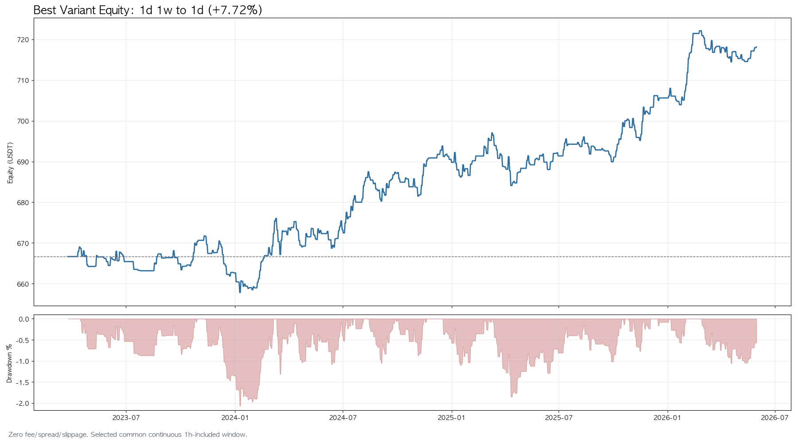
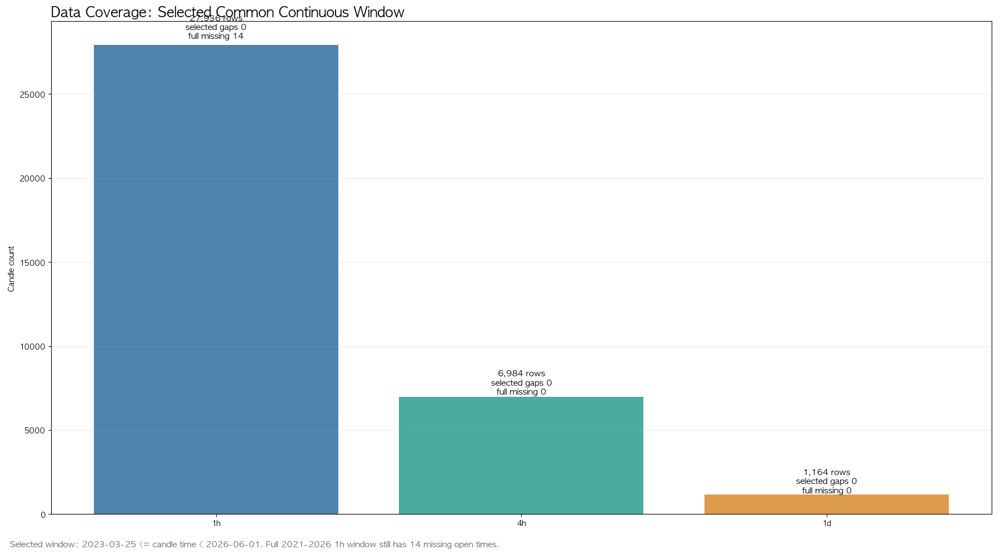
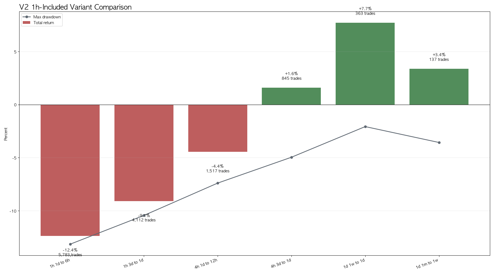
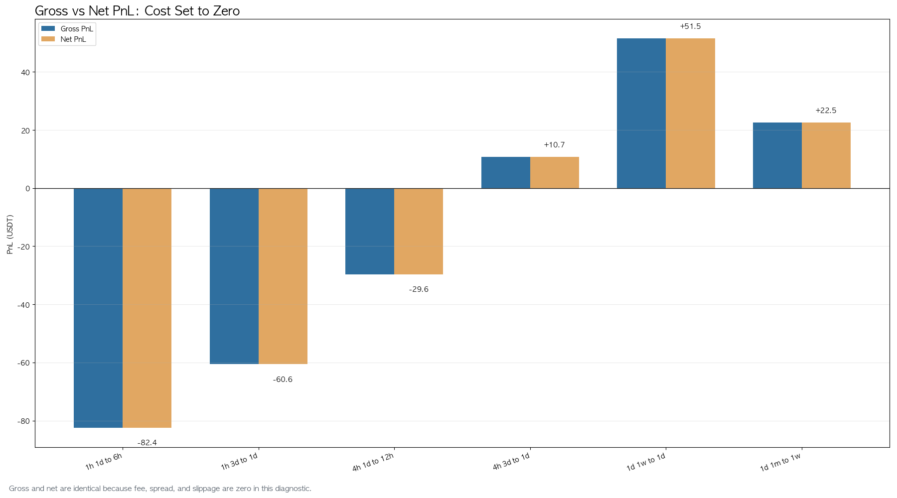
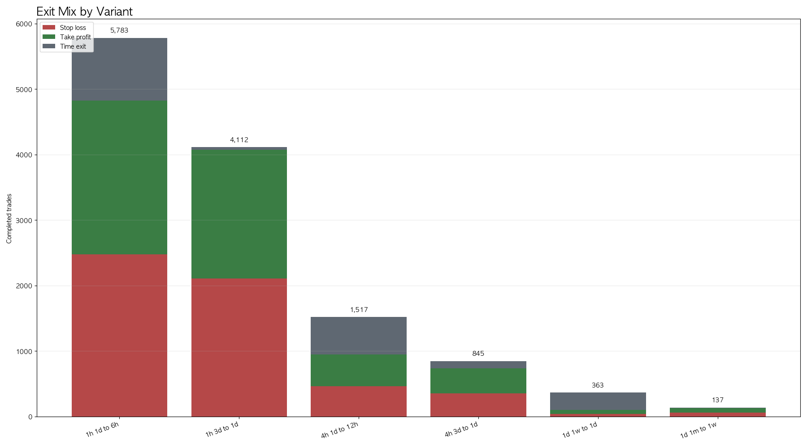
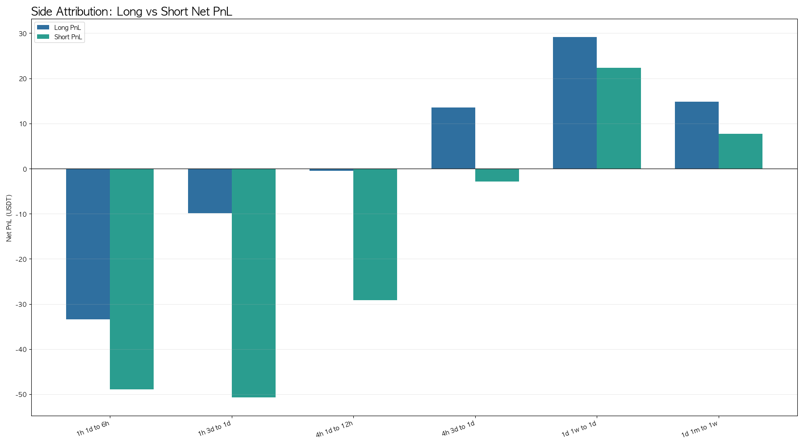
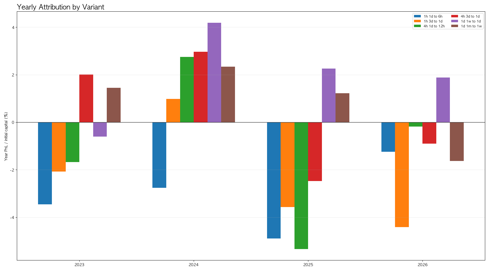
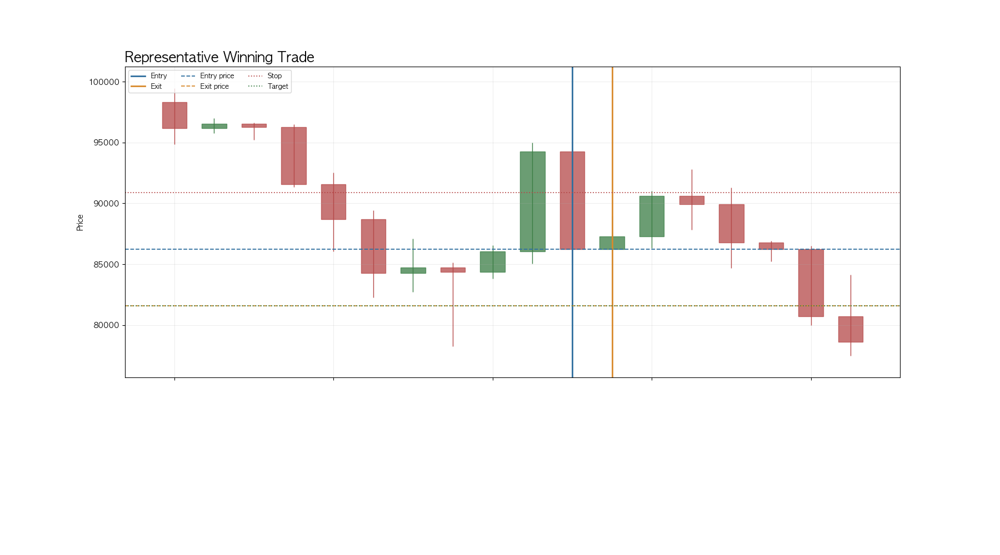
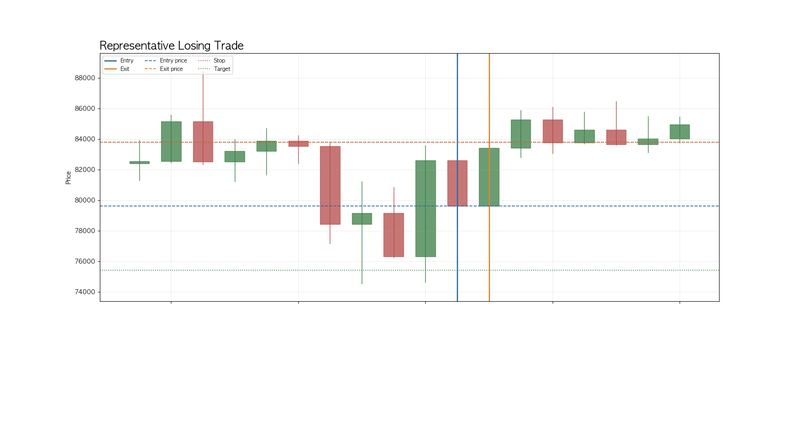

1. 핵심 요약
Lookback Return Momentum은 최근 완료봉들의 종가 수익률이 충분히 크면 이후 구간도 같은 방향으로 이어지는지 확인하는 전략입니다. V2는 이 아이디어를 분 단위 비교군에서 1h, 4h, 1d 비교군으로 옮겨, 정보 반영 지연과 느린 포지션 조정이라는 전제가 더 긴 시간축에서 더 잘 드러나는지 확인했습니다.
이번 결과는 이전 V2 산출물과 다릅니다. 1h를 제외하지 않았고, 2021년부터의 전체 구간에 남은 1h 내부 gap을 public backfill로 복구하지 못했기 때문에 2023-03-25부터 2026-06-01 직전까지의 공통 연속 구간으로 다시 실행했습니다. 이 구간에서 1h 두 조합은 비용 0에서도 음수였고, 4h는 mixed, 1d는 양수였습니다.

| 항목 | 내용 |
|---|---|
| 시장/심볼 | Binance BTCUSDT |
| 기간 | 2023-03-25 00:00 UTC ~ 2026-06-01 00:00 UTC 직전 |
| 비교 대상 | 1h, 4h, 1d higher-timeframe lookback-return 조합 |
| 전체 window 처리 | 2021-2026 1h 내부 gap이 남아 fallback 공통 연속 window 사용 |
| 비용 조건 | 수수료, 스프레드, 슬리피지 0 |
| 청산 조건 | 진입 시점 ATR 기준 1 ATR 손절, 1 ATR 익절, holding_bars 도달 시 시간 청산 |
| 포지션 크기 | 초기 1,000,000 KRW를 666.67 USDT로 환산하고 거래당 10% 사용 |
핵심은 V2가 V1의 단순 반복이 아니라는 점입니다. V1은 1m, 5m, 15m에서 비용과 ATR 보상 구조를 견디는지를 확인했습니다. V2는 같은 신호식을 유지하되, 정보 반영 지연이라는 전제를 더 잘 맞는 시간축에서 다시 확인합니다. 따라서 이번 결과는 V1과 직접적인 수익률 경쟁이 아니라, 비교군을 바꾼 이유가 타당했는지를 보는 실험입니다.
2. 전략에 포함된 가정과 이론적 배경
이 전략의 중심 전제는 최근 수익률이 아직 완전히 해소되지 않은 정보, 자금 흐름, 포지션 조정, 추세 추종 참여를 압축한다는 점입니다. 모든 참여자가 같은 속도로 정보를 반영하지 않고, 큰 포지션 조정이 여러 시간 또는 여러 날에 걸쳐 진행되면 최근 움직임 뒤에 같은 방향의 후속 흐름이 남을 수 있습니다.
V1의 분봉 비교군은 실행 비용과 짧은 방향 지속성을 확인하는 데 의미가 있었지만, 정보 반영 지연을 직접 확인하기에는 시간축이 짧았습니다. 1m와 5m에서는 스프레드 통과, 짧은 청산 연쇄, 국지적 주문 불균형, 빠른 되돌림이 신호에 많이 섞입니다. 그래서 분봉에서 약하거나 실패한 결과만으로 정보 반영 지연 기반 모멘텀 전체를 기각하기 어렵습니다.
- 1h는 분봉 노이즈를 줄이면서 intraday 정보 전파와 당일 포지션 조정을 확인하기 위한 시간축입니다.
- 4h는 세션 단위 흐름과 cross-session 조정을 확인하기 위한 시간축입니다.
- 1d는 일 단위 자금 흐름, 위험 선호 변화, 느린 allocation 변화를 확인하기 위한 시간축입니다.
- Jegadeesh and Titman(1993)은 가격 모멘텀과 과소반응 배경을 제공합니다. Moskowitz, Ooi, and Pedersen(2012)은 한 자산의 과거 수익률이 이후 방향 정보가 될 수 있다는 넓은 배경을 제공합니다.
- Hong and Stein(1999)은 정보가 천천히 확산될 때 underreaction과 momentum trading이 연결될 수 있음을 설명합니다. Barberis, Shleifer, and Vishny(1998), Daniel, Hirshleifer, and Subrahmanyam(1998)은 투자자 심리와 under/overreaction을 설명하는 배경입니다.
- 이 문헌들은 BTCUSDT의 현재 구현이 작동한다는 증거가 아닙니다. 이번 백테스트는 문헌의 메커니즘과 더 맞는 시간축으로 검증 범위를 옮겼을 때 저장 결과가 어떻게 달라지는지 확인한 것입니다.
r_t(L) = close[t] / close[t - L] - 1
if r_t(L) >= threshold:
enter long
elif r_t(L) <= -threshold:
enter short
else:
stay flat전략이 성공하려면 최근 수익률이 단기 과열이나 청산 후 되돌림이 아니라, 후속 참여와 느린 정보 반영을 요약해야 합니다. 반대로 최근 움직임이 이미 소진된 상태라면 같은 규칙은 늦게 진입하거나 시간 청산과 손절을 반복합니다.
3. 백테스트 설정
신호와 ATR은 signal candle까지의 완료봉만 사용합니다. 진입은 signal candle close에서 처리하고, 손절·익절·시간 청산 확인은 다음 완료봉부터 시작합니다. 같은 candle에서 손절과 익절이 모두 닿으면 손절을 먼저 적용합니다.
# explanatory pseudocode
lookback_return = close[t] / close[t - lookback_bars] - 1
risk_distance = ATR_14_RMA[t]
long_stop = entry_price - risk_distance
long_target = entry_price + risk_distance
short_stop = entry_price + risk_distance
short_target = entry_price - risk_distance
# exit priority from next completed candle
stop_loss -> take_profit -> time_exit시간 청산은 이번 실험에서 중요합니다. holding_bars는 lookback 신호가 예측해야 할 forward horizon을 정합니다. 이 규칙이 없으면 포지션이 훨씬 나중의 손절이나 익절까지 남아 있어, 짧은 정보 반영 지연 검증이 아니라 무기한 추세 추종 테스트로 바뀝니다. 시간 청산이 많다면 가격이 정해진 horizon 안에서 1 ATR 손절이나 1 ATR 목표에 충분히 닿지 않았다는 뜻이므로, 보유 기간과 ATR 폭을 함께 다시 확인해야 합니다.

| 타임프레임 | 선택 구간 상태 | 저장 candle | missing | 시작 | 마지막 |
|---|---|---|---|---|---|
| 1h | 실행 | 27,936 | 0 | 2023-03-25 | 2026-05-31 |
| 4h | 실행 | 6,984 | 0 | 2023-03-25 | 2026-05-31 |
| 1d | 실행 | 1,164 | 0 | 2023-03-25 | 2026-05-31 |
4. 결과
결과는 한 문장으로 정리하기 어렵습니다. 1h는 두 조합 모두 비용 0에서도 음수였고, 4h는 짧은 lookback 조합이 음수, 긴 lookback 조합이 소폭 양수였습니다. 1d 두 조합은 모두 양수였습니다. 이는 정보 반영 지연 전제가 더 느린 시간축에서 더 나을 수 있다는 쪽에 일부 근거를 주지만, higher timeframe 전체가 자동으로 우월하다는 뜻은 아닙니다.

| 비교 대상 | TF | lookback | hold | threshold | 거래 | 수익률 | MDD | 순손익 | 평균 R | 승률 | PF |
|---|---|---|---|---|---|---|---|---|---|---|---|
| 1h 1d to 6h | 1h | 24 | 6 | 0.005 | 5,783 | -12.36% | -13.15% | -82.40 | -0.031 | +47.95% | 0.928 |
| 1h 3d to 1d | 1h | 72 | 24 | 0.015 | 4,112 | -9.09% | -10.44% | -60.58 | -0.035 | +48.05% | 0.939 |
| 4h 1d to 12h | 4h | 6 | 3 | 0.010 | 1,517 | -4.44% | -7.39% | -29.63 | -0.013 | +47.99% | 0.946 |
| 4h 3d to 1d | 4h | 18 | 6 | 0.030 | 845 | +1.60% | -4.96% | +10.68 | 0.023 | +51.24% | 1.026 |
| 1d 1w to 1d | 1d | 7 | 1 | 0.030 | 363 | +7.72% | -2.07% | +51.48 | 0.057 | +51.52% | 1.276 |
| 1d 1m to 1w | 1d | 30 | 7 | 0.100 | 137 | +3.38% | -3.57% | +22.54 | 0.061 | +52.55% | 1.145 |
비용 조건은 결과 해석의 경계입니다. 이번 실행은 수수료, 스프레드, 슬리피지를 모두 0으로 두었기 때문에 gross PnL과 net PnL이 같습니다. 수익 조합은 비용을 이겨서 양수가 된 것이 아니라, 비용을 아직 넣지 않은 상태에서 raw 방향성과 ATR-1 청산 구조가 양수였다는 뜻입니다.

exit mix는 시간 청산의 의미를 보여줍니다. 1h와 4h의 짧은 lookback 조합은 거래 수가 많지만 손절과 시간 청산이 많아 기대값이 낮았습니다. 1d 1개월 lookback 조합은 거래 수가 적고 목표가 비중이 상대적으로 높아 가장 좋은 결과를 만들었습니다.

| 비교 대상 | 손절 | 익절 | 시간 청산 | 시간 청산 비중 |
|---|---|---|---|---|
| 1h 1d to 6h | 2473 | 2354 | 956 | +16.53% |
| 1h 3d to 1d | 2106 | 1967 | 39 | +0.95% |
| 4h 1d to 12h | 460 | 484 | 573 | +37.77% |
| 4h 3d to 1d | 353 | 379 | 113 | +13.37% |
| 1d 1w to 1d | 36 | 61 | 266 | +73.28% |
| 1d 1m to 1w | 57 | 67 | 13 | +9.49% |
side attribution도 대칭적이지 않습니다. 일부 양수 조합은 Long과 Short가 모두 기여했지만, 방향별 기여가 균등하지 않습니다. 이 결과는 양방향 모멘텀 전체가 안정적으로 작동한다는 결론보다, 특정 시간축과 특정 방향의 조합이 raw edge를 만든다는 해석에 가깝습니다.

| 비교 대상 | Long 거래 | Long 순손익 | Short 거래 | Short 순손익 |
|---|---|---|---|---|
| 1h 1d to 6h | 3,011 | -33.44 | 2,772 | -48.95 |
| 1h 3d to 1d | 2,186 | -9.86 | 1,926 | -50.72 |
| 4h 1d to 12h | 782 | -0.50 | 735 | -29.14 |
| 4h 3d to 1d | 463 | +13.50 | 382 | -2.82 |
| 1d 1w to 1d | 200 | +29.18 | 163 | +22.30 |
| 1d 1m to 1w | 88 | +14.84 | 49 | +7.71 |
yearly attribution은 regime을 거칠게 확인하는 표입니다. 2023년, 2024년, 2025년, 2026년은 trend, 변동성, 자금 흐름 조건이 다를 수 있습니다. 이 표는 calendar year proxy일 뿐이며, bull/bear, 변동성, 유동성, 위험 선호 regime을 직접 분류한 결과는 아닙니다.

| 비교 대상 | 2023 | 2024 | 2025 | 2026 |
|---|---|---|---|---|
| 1h 1d to 6h | -3.46% | -2.76% | -4.89% | -1.25% |
| 1h 3d to 1d | -2.08% | +0.98% | -3.57% | -4.42% |
| 4h 1d to 12h | -1.68% | +2.74% | -5.33% | -0.18% |
| 4h 3d to 1d | +2.01% | +2.97% | -2.48% | -0.90% |
| 1d 1w to 1d | -0.60% | +4.18% | +2.26% | +1.88% |
| 1d 1m to 1w | +1.44% | +2.34% | +1.22% | -1.63% |
5. 대표 거래
대표 거래는 최고 성과 조합인 1d 1w to 1d에서 골랐습니다. 이 조합은 최근 1개월 수익률이 기준을 넘으면 다음 1주 안에 같은 방향의 흐름이 이어지는지 확인합니다. 대표 수익 거래와 손실 거래 모두 같은 규칙에서 나왔지만, 하나는 1 ATR 목표가에 닿았고 다른 하나는 손절로 끝났습니다.
| 구분 | 방향 | 진입 | 청산 | 청산 사유 | 순손익 | 실현 R | momentum |
|---|---|---|---|---|---|---|---|
| 수익 거래 | SHORT | 2025-03-03 | 2025-03-04 | TAKE_PROFIT | +3.74 | 1.000 | -0.0582 |
| 손실 거래 | SHORT | 2025-04-10 | 2025-04-11 | STOP_LOSS | -3.62 | -1.000 | -0.0433 |
수익 거래는 진입 뒤 정해진 horizon 안에서 목표가에 도달했습니다. 이 사례는 V2가 기대한 느린 방향 지속이 실제로 발생한 예입니다. 다만 한 거래가 전체 결과를 설명하지는 않습니다. 최고 조합 전체에서도 거래 수는 제한적이고, 연도별 기여와 방향별 기여가 균등하지 않습니다.

손실 거래는 같은 momentum 구조에서 나왔지만, 진입 뒤 흐름이 이어지지 않고 손절에 닿았습니다. 이 사례는 V2의 실패 경로를 보여줍니다. 최근 수익률이 컸더라도 이후 구간이 이미 소진되었거나 변동성 반전으로 바뀌면 1 ATR 손절이 먼저 발생합니다.

6. 해석
이번 rerun은 이전 산출물에서 비어 있던 1h 질문을 채웠습니다. 결론은 단순히 higher timeframe이 좋다는 쪽이 아닙니다. 1h는 비용 0에서도 양수 edge를 보이지 않았고, 4h도 lookback과 holding 조합에 따라 결과가 갈렸습니다. 양수 근거는 1d 쪽에서 더 분명했습니다.
따라서 현재 결과는 `Lookback Return Momentum V2`의 일봉 중심 조합에는 raw no-cost 가능성이 있지만, 1h close-to-close momentum까지 넓게 유효하다고 말하기 어렵다는 쪽으로 해석합니다. 동시에 이 결과만으로 모멘텀 전략 전체를 기각하거나 채택할 수 없습니다. 비용을 제거했고, 기간은 fallback 공통 구간으로 줄었으며, regime filter와 외부 risk-flow 정보가 빠져 있습니다.
- V1과 비교하면, 단기 분봉의 비용·turnover 문제가 이번 V2에서는 비용 0으로 제거됐습니다. 그래서 V2 양수 결과는 비용을 이긴 결과가 아니라 raw 방향성과 청산 구조를 확인한 결과입니다.
- 비교군을 바꾼 이유는 정보 반영 지연 전제와 시간축을 맞추기 위해서입니다. 분봉 실패는 execution/cost 관점에서 중요하지만, 느린 정보 확산을 검정하기에는 충분하지 않을 수 있습니다.
- 1h가 음수였다는 점은 중요합니다. 정보 반영 지연이 있다면 1h부터 좋아질 것이라는 단순 기대는 이번 결과에서 약해졌습니다.
- 1d가 양수였다는 점은 더 느린 horizon의 가능성을 남깁니다. 다만 거래 수가 줄고 regime 의존성이 커질 수 있어 비용 반영과 OOS/WFO가 필요합니다.
- 시간 청산은 보완 대상입니다. 시간 청산이 많은 조합은 목표가까지 갈 만큼 충분히 강하지 않았거나, holding_bars와 ATR 폭이 맞지 않았을 수 있습니다.
- regime이 반영되지 않은 점도 큰 한계입니다. 다음 검증은 가격이 장기 이동평균 위/아래인지, ATR 또는 실현 변동성 percentile이 높은지, drawdown/recovery 상태인지, 거래대금 proxy가 충분한지를 사전에 정의해 나눠야 합니다.
보완점은 다음과 같습니다.
- 양수였던 1d 조합부터 거래비용을 다시 넣어야 합니다. 비용 0 결과는 viability가 아니라 raw edge 확인입니다.
- holding_bars를 사전 정의된 작은 grid로 비교해야 합니다. 시간 청산이 많은 조합은 forward horizon과 ATR-1 target이 맞지 않았을 가능성이 있습니다.
- exit reason별 평균 R을 다음 리포트에서 별도로 보여줘야 합니다. 시간 청산이 손익에 기여하는지, target/stop이 대부분을 설명하는지 분리해야 합니다.
- regime task를 별도로 만들어야 합니다. trend state, volatility percentile, drawdown/recovery, trading-value proxy를 먼저 정의하고, 같은 V2 조합을 regime별로 나눈 뒤 OOS/WFO로 넘어가야 합니다.